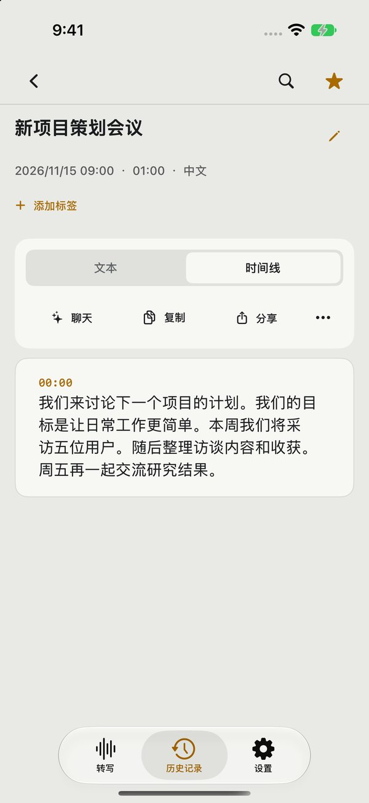
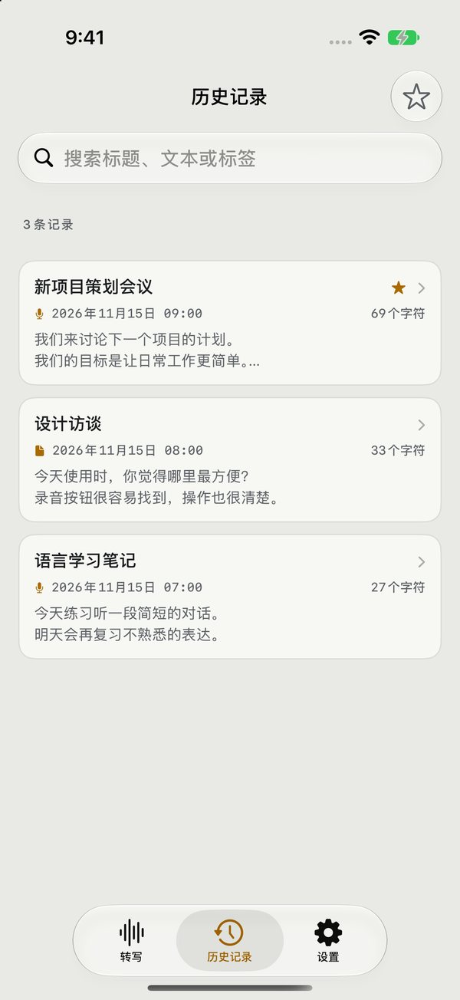
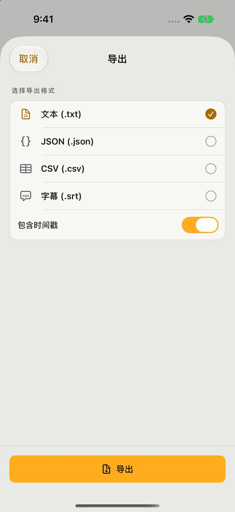

你的声音，化作文字。
录下一场会议、一堂课或一次访谈，或者导入音频、视频文件，就能在 iPhone 或 iPad 上得到转写文本。语音识别由 Whisper 在你的设备上完成，因此只需一次性下载模型，之后即使没有网络连接也能使用。
- 全部功能免费
- 无广告
- 无 App 内购买
- 无需账户
- iPhone 和 iPad
所有功能，免费。
没有付费版本。本页面列出的所有内容——录音、文件导入、全部 Whisper 模型、导出、历史记录、标签、Apple Intelligence 对话和快捷指令——都可以免费使用。无需创建账户，App 也不会显示广告。
- 无需订阅，也无需一次性购买
- 没有 App 内购买，也没有锁定功能
- 无广告，也没有第三方跟踪
- 无需注册或登录
- App 不对录音时长或文件数量设限 ——但仍受设备存储空间、内存和电量限制
三步获得转写文本
一次性下载模型
首次打开时，选择一个 Whisper 模型并下载。默认的 Base 模型约为 142 MB。这是唯一需要网络连接的步骤。
录音或导入
轻点即可用麦克风录音，也可以从“文件”或“照片”中选择音频或视频文件。录音过程中可以暂停和继续。
阅读、编辑和导出
查看带时间戳的文本，修正错误，然后以 TXT、CSV、JSON 或 SRT 字幕的形式分享。
你可以用它做什么
进一步了解 App 的几个主要部分。
录音，或导入你自己的文件
轻点一下即可开始录音，也可以导入现有的音频或视频。App 会在设备上转换音频并完成转写。
- 麦克风录音，支持暂停和继续，并可切换外接麦克风
- 在支持的 iPhone 上，通过实时活动在锁定屏幕和灵动岛显示录音状态
- 从“文件”App 导入 M4A、WAV、MP3、MP4 和 MOV 等音频和视频
- 直接从“照片”图库中选择视频
- 可选“保持屏幕常亮”，适合长时间录音
Whisper，在你的设备上运行
App 通过 whisper.cpp 使用 OpenAI 开放发布的 Whisper 模型，并在可用时启用 Metal GPU 加速。你可以更换模型，在速度和准确度之间做出取舍。
- 10 款 Whisper 模型，从 Tiny（约 15 MB）到 Large v3 Turbo 和 Medium（最大约 1.5 GB）
- 自动语言检测，或从 18 种语言中选择
- 可选将结果翻译成英语
- 可选下载 Core ML 编码器，在支持的设备上可能加快处理速度
- 在 iOS 26 或更高版本上，还可以选择使用 Apple 的设备端语音引擎

时间线视图或阅读视图
在简洁的文本视图和带时间戳的时间线之间切换。可以回放原始音频来核对内容，并在需要时修正文字。
- 文本视图和时间线视图，可选择显示时间戳
- 音频播放，可调整速度和位置
- 编辑转写文本及其标题
- 复制单个段落或全文
- 在转写文本内搜索

可搜索的历史记录
每份转写都保存在你的设备上，方便之后随时回看。
- 按标题、文本或标签搜索
- 收藏与排序
- 可跨所有转写添加、重命名、合并和删除标签
- 按标签筛选历史记录

文本、数据或字幕
以适合下一步的格式分享转写文本——笔记、表格、脚本或视频剪辑。
- TXT，适合笔记和文档
- CSV，适合表格
- 包含分段的 JSON，适合你自己的工具
- SRT 字幕，适合视频剪辑
- 将原始录音作为音频文件分享
围绕转写提问 iOS 26+
在支持 Apple Intelligence 的设备上，你可以就某份转写进行对话——请它生成摘要、关键决策或待办事项——并生成标题。对话会按转写分别保存。较长的转写会分段读取。可选的私有云计算模式（iOS 27 或更高版本）默认关闭。
快捷指令与 Siri
使用 App 快捷指令来开始或停止录音、转写媒体文件、查找转写、获取转写文本，或添加标签和收藏——很适合自动化流程。部分操作需要较新版本的 iOS。
全部功能——全部免费
App 目前提供的完整功能列表。以下各项都无需付费。
采集
- 麦克风录音免费
- 暂停和继续录音录音时也能处理来电等中断免费
- 切换麦克风免费
- 录音时的实时活动锁定屏幕和灵动岛免费
- 导入音频文件M4A、WAV、MP3 等常见格式免费
- 导入视频文件MP4、MOV 等常见格式免费
- 从“照片”导入视频免费
- 实时转写说话时文字即时出现 · iOS 26+免费
语音识别
- 设备端 Whisper（whisper.cpp）免费
- 全部 10 款 Whisper 模型Tiny、Base、Small、Medium、Large v3 Turbo 及精简变体免费
- Apple 设备端语音引擎iOS 26+，语言由 iOS 管理免费
- 自动检测或从 18 种语言中选择免费
- 翻译成英语免费
- Metal GPU 加速在设备支持的情况下免费
- Core ML 编码器（可选下载）免费
准确度与性能工具
- 跳过静音片段语音活动检测（VAD）免费
- 音频清理降噪和音量标准化免费
- 词汇提示让模型预先了解的人名和术语免费
- Flash Attention可能降低内存占用并加快处理速度免费
- 包含时间戳免费
阅读与编辑
- 文本视图和时间线视图免费
- 音频播放，可调节速度免费
- 编辑转写文本和标题免费
- 复制段落或全文免费
- 在转写文本内搜索免费
历史记录与整理
- 保存转写历史记录免费
- 按标题、文本或标签搜索免费
- 收藏和排序免费
- 标签：添加、重命名、合并、删除免费
- 按标签筛选免费
导出与分享
- 文本（.txt）免费
- CSV（.csv）免费
- JSON（.json）免费
- 字幕（.srt）免费
- 分享原始音频免费
- 通过分享面板分享文本免费
Apple Intelligence
- 围绕转写进行对话iOS 26+，需设备支持免费
- 按转写保存对话历史免费
- 生成标题免费
- 私有云计算模式可选 · iOS 27+ · 默认关闭免费
自动化与 App
- 快捷指令与 Siri 操作免费
- iPhone 和 iPad 布局免费
- 浅色、深色或跟随系统外观免费
- 11 种语言的界面免费
- 模型与存储空间管理免费
标注了 iOS 版本的功能需要该版本或更高版本。Apple Intelligence 功能还取决于设备支持情况、所在地区和语言设置。
选择适合你的平衡点
较小的模型通常更快、更轻；较大的模型通常更准确，但需要更多存储空间、内存和时间。你可以随时在“设置”中切换模型。
| 模型 | 下载大小（约） | 通常适合 |
|---|---|---|
| Tiny Q5_1 | 15 MB | 在旧款或存储空间有限的设备上快速生成草稿 |
| Tiny | 39 MB | 快速、基础的转写 |
| Base Q5_1 | 60 MB | 默认模型的轻量版本 |
| Base 默认 | 142 MB | 日常使用，速度与准确度均衡 |
| Small Q5_1 | 163 MB | 下载体积更小，准确度更好 |
| Small | 466 MB | 更高的准确度 |
| Medium Q5_0 | 568 MB | 高准确度，下载体积比 Medium 更小 |
| Large v3 Turbo Q5_0 | 574 MB | 快速且准确，轻量变体 |
| Large v3 Turbo Q8_0 | 874 MB | 快速且准确 |
| Medium | 1.5 GB | 各选项中准确度最高，速度较慢 |
模型文件从 Hugging Face 下载。实际速度和准确度会因设备、语言、音频质量和时长而异。
旨在让音频留在你的设备上
Whisper 转写在本地运行。App 不含广告、分析 SDK 或第三方跟踪，也不会将你的音频或转写文本发送给开发者。
留在你的设备上
录音、导入的媒体、转写文本、标签、对话和设置都存储在设备上的 App 内。你可以随时在 App 中删除它们。
App 何时联网
从 Hugging Face 下载 Whisper、VAD 和 Core ML 模型文件；向 App Store 检查是否有新版本；以及 iOS 为 Apple 的引擎下载语音模型时。
由你来决定
用于 Apple Intelligence 的私有云计算默认关闭。如果你开启它，转写文本和你的问题将由 Apple 的私有云计算处理。分享导出内容时，内容会发送到你选择的位置。
开始之前
设备与系统
运行 iOS / iPadOS 17.0 或更高版本的 iPhone 或 iPad。实时转写、Apple 的语音引擎和设备端 Apple Intelligence 需要 iOS 26 或更高版本；私有云计算需要 iOS 27 或更高版本。
存储空间与网络
下载模型需要网络连接和可用存储空间（视模型不同，约 15 MB 到 1.5 GB）。录音需要麦克风权限。
常见问题
App 真的免费吗？
是的。目前所有功能都可以免费使用。没有广告，没有 App 内购买，没有订阅，也无需注册账户。
可以离线使用吗？
Whisper 转写设计为在你的设备上运行。下载模型时需要联网一次；之后使用该模型录音和转写通常无需网络连接。下载其他模型、检查更新以及可选的私有云计算模式则需要联网。
我的音频会被发送到服务器吗？
Whisper 转写在本地运行，App 不会将音频或转写文本发送给开发者。唯一由你控制的例外是用于 Apple Intelligence 对话的可选私有云计算模式，它会将转写文本和你的问题发送到 Apple 的私有云计算。该模式默认关闭。
应该选择哪个模型？
对大多数人来说，Base 是比较合适的起点。如果结果漏词较多，可以试试 Small、Medium 或 Large v3 Turbo。如果转写速度太慢，或设备内存吃紧，Tiny 或 Q5 变体可能会有帮助。
可以导入和导出哪些文件？
你可以从“文件”导入 M4A、WAV、MP3、MP4 和 MOV 等常见音频和视频格式，也可以从“照片”导入视频。转写文本可导出为 TXT、CSV、JSON 或 SRT，录音可以作为音频文件分享。
支持哪些语言？
转写时可以使用自动检测，也可以选择英语、日语、中文、韩语、西班牙语、法语、德语、意大利语、葡萄牙语、俄语、阿拉伯语、印地语、荷兰语、波兰语、土耳其语、越南语、泰语或印尼语。结果可能因语言而异。App 界面支持 11 种语言。
可以为视频生成字幕吗？
可以。导入视频、完成转写，然后导出为 SRT。大多数视频剪辑软件都能导入 SRT 文件。字幕时间轴与识别出的分段一致，你可能需要在剪辑软件中再作调整。
录音最长可以多长？
App 不设固定上限。实际上，超长音频能否处理取决于设备的可用存储空间、内存和电量，模型越大耗时越长。如果长文件处理失败，改用较小的模型或开启 Flash Attention 可能会有帮助。
这是 OpenAI 的官方 App 吗？
不是。这是一款独立 App，通过开源项目 whisper.cpp 运行 OpenAI 公开发布的 Whisper 模型，与 OpenAI 没有关联，也未获得其认可。